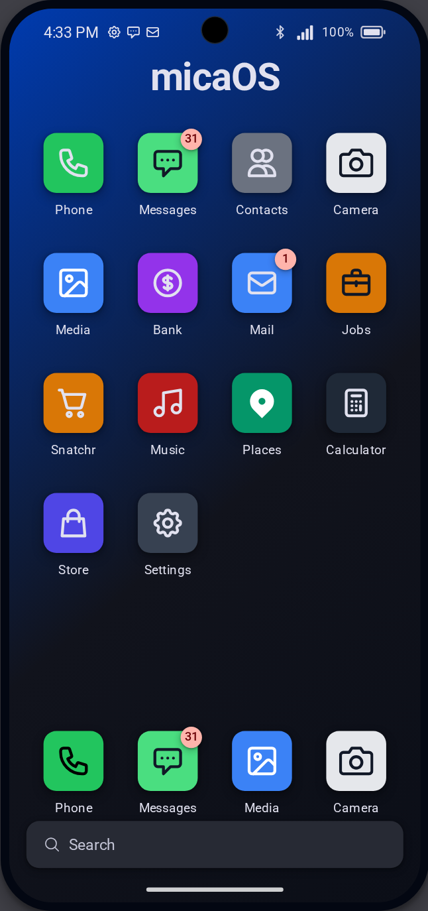
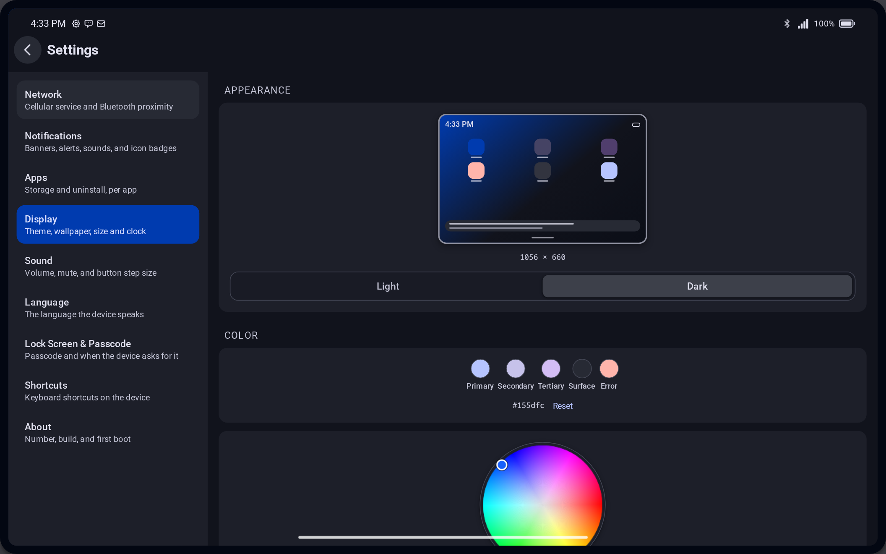

micaOS
An open-source, in-game phone and tablet OS for FiveM. Works with qbcore, qbox, esx, or standalone. Ships with an SDK for building your own add-ons, and installs from a release zip.
AGPL-3.0-or-later


An open-source, in-game phone and tablet OS for FiveM. Works with qbcore, qbox, esx, or standalone. Ships with an SDK for building your own add-ons, and installs from a release zip.
AGPL-3.0-or-later

